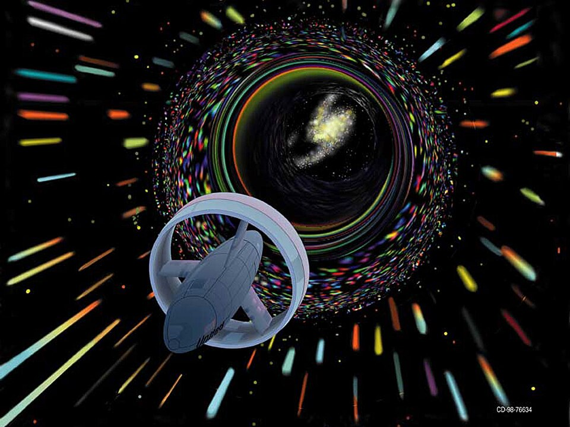
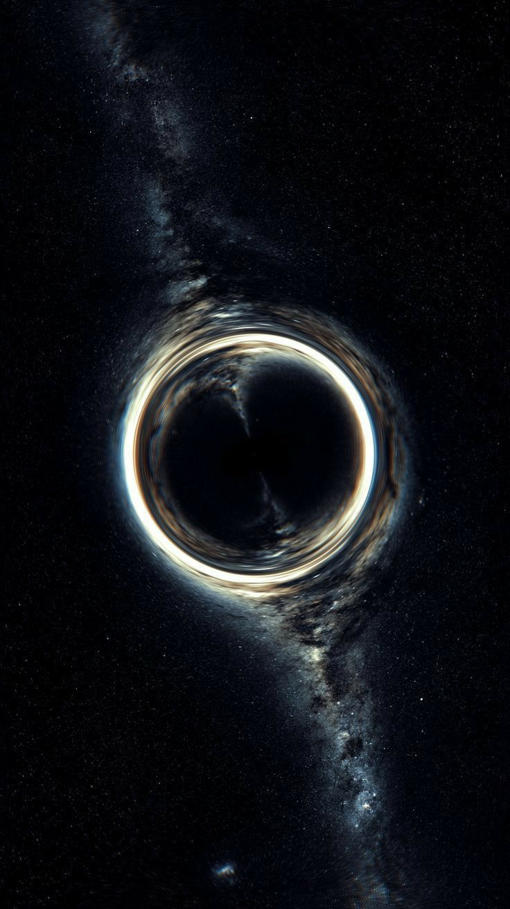

Einstein–Rosen Bridges
Wormholes
Theoretical tunnels through the fabric of spacetime — shortcuts across the cosmos

A Fold in the Fabric of Space
If spacetime can be bent, two distant regions might be connected by a shortcut — a wormhole — making cosmic travel theoretically possible.
What is a Wormhole?
A wormhole — formally called an Einstein–Rosen bridge — is a hypothetical topological feature of spacetime that would fundamentally be a shortcut connecting two separate points in the universe. Predicted by Albert Einstein and Nathan Rosen in 1935 as a consequence of general relativity, wormholes emerge from the same mathematics that describes black holes.
Imagine folding a sheet of paper so that two distant points touch. A wormhole is the tunnel that pierces through the fold, allowing travel between those points without traversing the full distance across the sheet. In reality, that "sheet" is the four-dimensional fabric of spacetime itself.
While the mathematics is sound, no wormhole has ever been observed. The key barrier: a traversable wormhole requires exotic matter — material with negative energy density — whose existence remains deeply uncertain.

NASA concept illustration by Les Bossinas — wormhole travel as envisioned for space exploration
Key Concepts
The physics, paradoxes, and possibilities of Einstein–Rosen bridges
Traversable vs. Non-Traversable
The original Einstein–Rosen bridge collapses too rapidly for anything to pass through — it is non-traversable. In 1988, Kip Thorne and Michael Morris proposed that exotic matter with negative energy could hold a wormhole open long enough for travel, creating a traversable wormhole.
Spacetime Topology
General relativity allows spacetime to have complex topological shapes. A wormhole represents a handle in the topology of space — a connection between two otherwise separate regions. Whether our universe's topology permits such handles is an open question in quantum cosmology.
Exotic Matter Requirement
To keep a wormhole throat open, its walls must be threaded with matter of negative energy density — a property that violates the classical energy conditions. The Casimir effect demonstrates that negative energy densities can exist at quantum scales, but whether they can be harnessed at cosmic scales remains unknown.
The Casimir Effect
Between two uncharged, parallel conducting plates placed mere nanometers apart, the quantum vacuum produces a measurable attractive force — evidence that negative energy densities are physically real. Some physicists argue this is the most plausible mechanism for producing the exotic matter required to stabilize a wormhole throat.
ER = EPR Conjecture
In 2013, Juan Maldacena and Leonard Susskind proposed a stunning equivalence: Einstein–Rosen bridges (wormholes) are the same thing as Einstein–Podolsky–Rosen pairs (quantum entanglement). Two entangled black holes, in this picture, are connected by a microscopic wormhole — linking quantum mechanics and general relativity at a fundamental level.
Time Machine Implications
If one mouth of a wormhole is accelerated to near-light speed and then returned, time dilation creates a temporal offset between the two ends. A traveler entering one mouth could theoretically emerge from the other at a different point in time — making a wormhole a potential time machine. Stephen Hawking's chronology protection conjecture argues nature forbids this.

Time Dilation Near a Wormhole
Any mass-energy curves spacetime, and a wormhole — held open by exotic matter — would create extreme curvature at its throat. As predicted by Einstein's field equations, time passes more slowly in stronger gravitational fields.
An observer near the wormhole mouth would age more slowly than one far away. If you spent one hour at the wormhole's throat, years might pass for someone watching from a safe distance — the same effect dramatized in Interstellar's Miller's planet sequence.
This temporal asymmetry between the two mouths of a wormhole is precisely what gives rise to the theoretical possibility of time travel — and the paradoxes that accompany it.
The Science Behind the Film
The wormhole in Christopher Nolan's Interstellar was rendered using equations derived directly by physicist Kip Thorne — the only scientifically accurate depiction of a wormhole in cinema history. The visual rendering engine, developed with the VFX team at Double Negative, simulated gravitational lensing so accurately that it produced scientific papers about the optical appearance of accretion disks around wormholes.
Thorne's key insight was that a wormhole mouth would appear as a sphere — not a flat portal — because light from the far side bends around the throat in all directions simultaneously. Stars behind the wormhole would appear as a distorted ring, with the opposite side of the universe visible through the wormhole's interior, warped and magnified by its intense gravity.
Wormholes & Space Travel
Could Einstein–Rosen bridges ever make interstellar travel a reality?
Interstellar Distances
The nearest star system, Alpha Centauri, is 4.37 light-years away. At any speed achievable with conventional propulsion, the journey would take tens of thousands of years. A wormhole bridging the two regions would reduce this to a walk through a tunnel — perhaps seconds of travel, regardless of the distance separated.
Energy Requirements
Maintaining a macroscopic wormhole would require a negative energy equivalent to the mass-energy of Jupiter, distributed at the wormhole's throat. This is currently beyond any known physical mechanism — but our universe has surprised physicists before. Dark energy itself demonstrates that exotic energy forms exist at cosmological scales.
Stability Problem
Even if a traversable wormhole could be created, quantum fluctuations at the Planck scale may render it inherently unstable, causing it to collapse faster than any signal or object could pass through. Some theorists suggest that a quantum theory of gravity — string theory or loop quantum gravity — may offer mechanisms for stabilization we cannot yet foresee.
Natural Wormholes
Some cosmological models suggest that quantum foam — the violent quantum fluctuations at the Planck scale (10⁻³⁵ m) — naturally generates microscopic wormholes that appear and disappear continuously. If such structures could somehow be enlarged and stabilized using exotic matter or advanced technology, they might provide a natural foundation for a traversable bridge.
"Wormholes are a legitimate prediction of Einstein's general theory of relativity. But just because something is allowed by the laws of physics doesn't mean it's achievable in practice."— Kip Thorne, Nobel Laureate in Physics